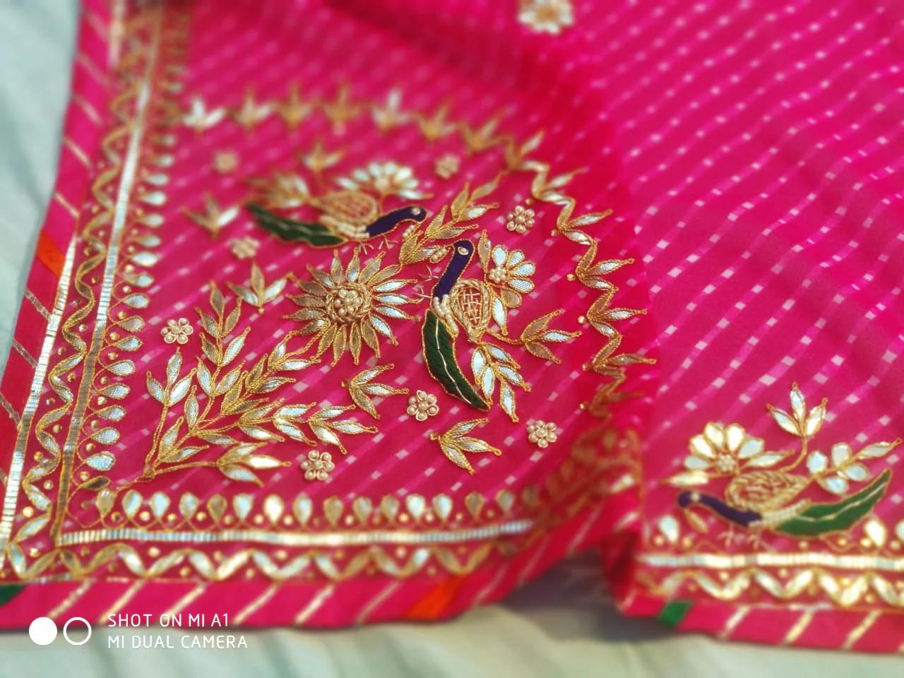
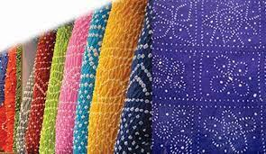
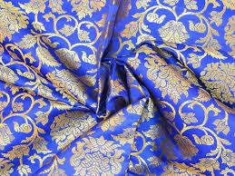

Craft Overview: India’s Living Handmade Heritage
India’s craft ecosystem is a vast, interconnected network of artisans who preserve knowledge that has been passed down for generations. Whether it is the shimmer of zardozi, the delicate geometry of gota-patti, the hand-spun texture of khadi, or the opulence of Benarasi brocades, each craft carries the weight of regional history and identity.
In my own learning as a fashion student, I realised that crafts are more than just surface decoration—they are slow processes built on time, labour, and cultural memory. While reading The Fabric of India (V&A Museum, 2015) and industry reports (FICCI, 2019), I understood how much of Indian fashion is rooted in these handcrafted traditions. Every motif, every thread count, every stitch technique represents communities, livelihoods, and local aesthetics.
This awareness helped me appreciate how designers engage with artisans, and it shaped why I chose to study Sabyasachi Mukherjee, a designer whose couture is inseparable from India’s craft heritage. His work does not simply “use” craft; it revives, repositions, and reveres it. Beginning the blog with this overview allows his design philosophy to be seen within the larger ecosystem of crafts, clusters, and artisan knowledge.